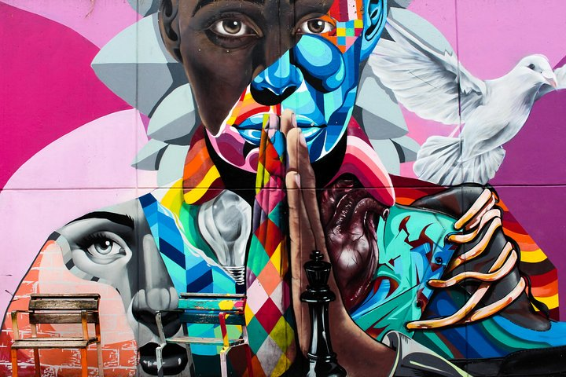

ViajandoXmundo
Bienvenido a Tu próximo viaje

Conoce los mejores destinos de Colombia
Medellín
Floreciente metrópolis de eterna primavera en las montañas colombianas.

Medellín es la segunda ciudad más grande de Colombia, es un destino turístico cada vez más popular debido a su fascinante combinación de historia, cultura, clima agradable y paisajes impresionantes. Ubicada en un valle rodeado de montañas, Medellín ofrece una amplia gama de atracciones turísticas que cautivan a visitantes de todo el mundo. Aquí hay una descripción de los aspectos turísticos más destacados de la ciudad:
Medellín ofrece una variedad de atractivos turísticos que incluyen su centro histórico, donde se pueden apreciar esculturas de Fernando Botero y la impresionante Catedral Basílica Metropolitana. La Comuna 13, antes peligrosa, ha experimentado una transformación con sus coloridos murales y escaleras mecánicas al aire libre. El Parque Arví, ubicado en las afueras, ofrece senderos naturales y actividades como canopy y avistamiento de aves. El famoso Metro de Medellín y el Metrocable brindan vistas panorámicas de la ciudad. Otros lugares destacados incluyen el Jardín Botánico con su diversa vegetación, el Museo de Antioquia con obras de arte colombiano y el Pueblito Paisa, una réplica de un pueblo tradicional con vistas impresionantes y gastronomía local.
La hermosa pieda del peñol
majestuoso monolito de granito con escalones que ofrecen vistas panorámicas impresionantes

La Piedra del Peñol en Medellín
La Piedra del Peñol en Medellín es un imponente monolito de granito con 740 escalones que conducen a la cima. Desde allí, se puede disfrutar de vistas panorámicas espectaculares del embalse Guatapé y sus alrededores montañosos, convirtiéndose en un destino obligado para los amantes de la naturaleza y los panoramas impresionantes.
Escultura de Botero
Volumen y estilo distintivo.
Comentarios de viajeros
-
Carlos Ramos
Medellín me sorprendió con su clima perfecto, su gente amable y sus increíbles vistas panorámicas. -
Ricardo Lopez
No puedo dejar de mencionar el famoso Metrocable de Medellín. Fue una experiencia única y espectacular! -
Luis Martinez
Me enamoré de los colores y la historia del barrio Comuna 13 en Medellín. -
Luciano Rojas
Me encantó el ambiente bohemio y artístico del barrio El Poblado en Medellín.
¡Etiquetas!
Peñol Viajes Medellín Verano Midgard Montaña Paisas Cultura Ciudad Colombia Arte Naturaleza Parques Plaza Botero
Inspiración

Follow Me
Subscribe
Ingresa tu correo electrónico a continuación y recibe notificaciones sobre las últimas publicaciones del blog.